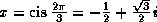
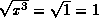
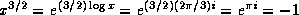
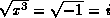
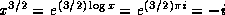
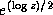

Common Lisp the Language, 2nd Edition
Along with the usual one-argument and two-argument exponential and logarithm functions, sqrt is considered to be an exponential function, because it raises a number to the power 1/2.
[Function]
exp number
Returns e raised to the power number, where e is the base of the natural logarithms.
[Function]
expt base-number power-number
Returns base-number raised to the power power-number. If the base-number is of type rational and the power-number is an integer, the calculation will be exact and the result will be of type rational; otherwise a floating-point approximation may result.

X3J13 voted in March 1989
(COMPLEX-RATIONAL-RESULT)
to clarify that provisions similar to those of the previous paragraph apply to complex
numbers. If the base-number is of type (complex rational)
and the power-number is
an integer,
the calculation will also be exact and the result will be of type
(or rational (complex rational));
otherwise a floating-point or complex floating-point approximation may result.

When power-number is 0 (a zero of type integer), then the result is always the value 1 in the type of base-number, even if the base-number is zero (of any type). That is:
(expt x 0) == (coerce 1 (type-of x))
If the power-number is a zero of any other data type, then the result is also the value 1, in the type of the arguments after the application of the contagion rules, with one exception: it is an error if base-number is zero when the power-number is a zero not of type integer.
Implementations of expt are permitted to use different algorithms for the cases of a rational power-number and a floating-point power-number; the motivation is that in many cases greater accuracy can be achieved for the case of a rational power-number. For example, (expt pi 16) and (expt pi 16.0) may yield slightly different results if the first case is computed by repeated squaring and the second by the use of logarithms. Similarly, an implementation might choose to compute (expt x 3/2) as if it had been written (sqrt (expt x 3)), perhaps producing a more accurate result than would (expt x 1.5). It is left to the implementor to determine the best strategies.
X3J13 voted in January 1989
(EXPT-RATIO)
to clarify that the preceding remark is in
error, because (sqrt (expt x 3)) does not produce the same value
as (expt x 3/2) in most cases, and to specify that the
specification of the principal value of expt as given in section 12.5.3
should be regarded as definitive.
As an example of the difficulty, let
.
Then , but
.
Another example is x=-1; then , but
.
The result of expt can be a complex number, even when neither argument is complex, if base-number is negative and power-number is not an integer. The result is always the principal complex value. Note that (expt -8 1/3) is not permitted to return -2; while -2 is indeed one of the cube roots of -8, it is not the principal cube root, which is a complex number approximately equal to #C(1.0 1.73205).
Notice of correction. The first edition gave the incorrect value
#C(0.5 1.73205) for the principal cube root of -8. The correct
value is #C(1.0 1.73205), that is, 1+SQRT(3)i. I simply don't know what
I was thinking of!
[Function]
log number &optional base
Returns the logarithm of number in the base base, which defaults to e, the base of the natural logarithms. For example:
(log 8.0 2) => 3.0 (log 100.0 10) => 2.0
The result of (log 8 2) may be either 3 or 3.0, depending on the implementation.
Note that log may return a complex result when given a non-complex argument if the argument is negative. For example:
(log -1.0) == (complex 0.0 (float pi 0.0))
X3J13 voted in January 1989
(IEEE-ATAN-BRANCH-CUT)
to specify certain floating-point behavior when minus zero is supported.
As a part of that vote it approved a mathematical definition of complex logarithm
in terms of real logarithm, absolute value,
arc tangent of two real arguments, and the phase function as
Logarithm log|z| + i phase zThis specifies the branch cuts precisely whether minus zero is supported or not; see phase and atan.
[Function]
sqrt number
Returns the principal square root of number. If the number is not complex but is negative, then the result will be a complex number. For example:
(sqrt 9.0) => 3.0 (sqrt -9.0) => #c(0.0 3.0)
The result of (sqrt 9) may be either 3 or 3.0, depending on the implementation. The result of (sqrt -9) may be either #c(0 3) or #c(0.0 3.0).
X3J13 voted in January 1989
(IEEE-ATAN-BRANCH-CUT)
to specify certain floating-point behavior when minus zero is supported.
As a part of that vote it approved a mathematical definition of complex square root
in terms of complex logarithm and exponential functions as
Square root This specifies the branch cuts precisely whether minus zero is supported or not; see phase and atan.
[Function]
isqrt integer
Integer square root: the argument must be a non-negative integer, and the result is the greatest integer less than or equal to the exact positive square root of the argument. For example:
(isqrt 9) => 3 (isqrt 12) => 3 (isqrt 300) => 17 (isqrt 325) => 18